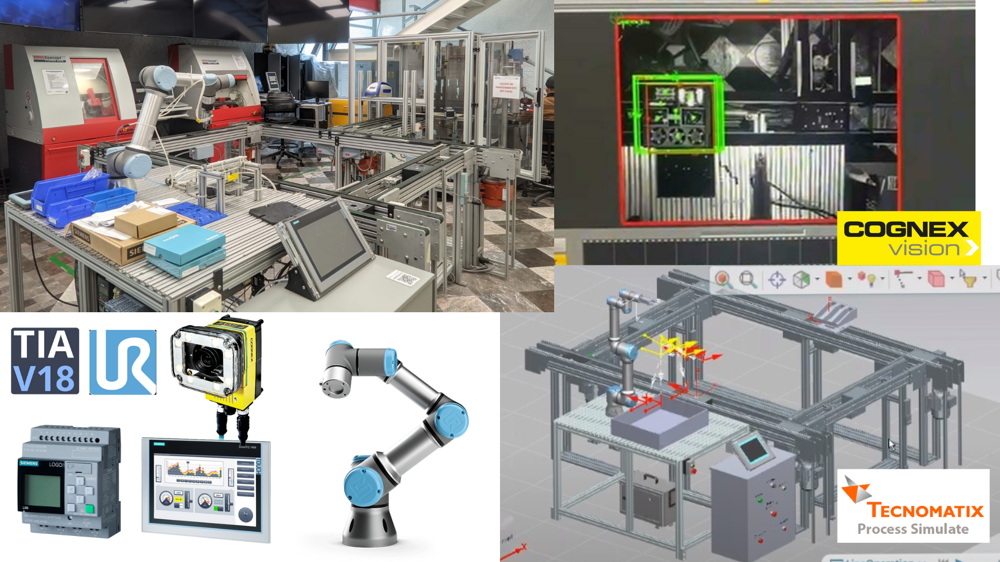
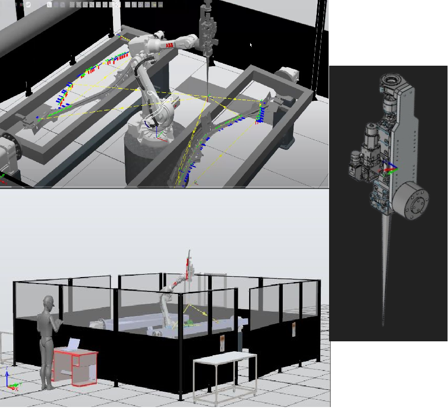
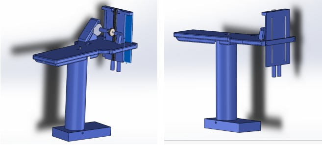
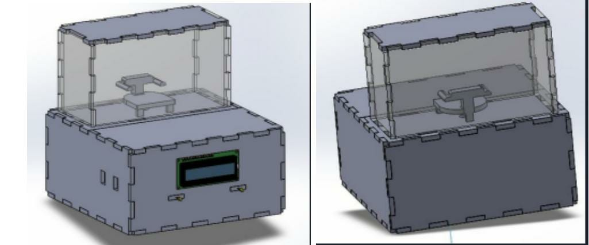
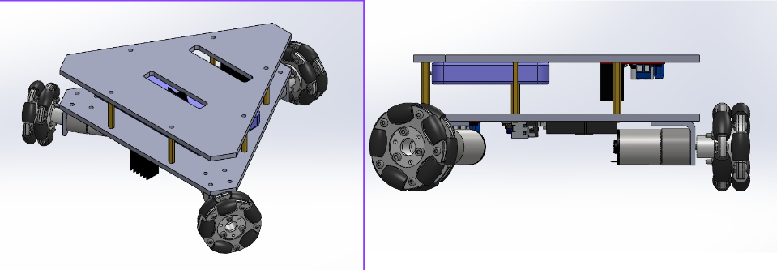

im currently studying mechatronics engineer with a major in automotive design at Tec de Monterrey. i also have a technical degree in electronics from high school & a computer hardware repair certification. im an enthusiast about cars and the automotive industry, robotics, manufacturing and automation, renewable industries; also electronics, control systems and passionate about learning and applying new thing to projects that provides a valuable and functional solution for society.

University project carried out with Siemens & the University of Manchester where we developed an automated control of a Pick & Place and packaging process, using a Siemens S7-300 PLC for the control, a HMI for the interaction with the operator, a Cognex camera for the vision system and finally also its respective Digital Twin for the simulation in real time using Tecnomatix. Click here for more info.

School Project developed with ABB where we proposed a solution for an automated laser welding process for a very complex part for a car using a robotic arm, in which we made the planning and design of the manufacturing cell and the work area based on quality standards and regulations. We also made the choice of machinery and the 3D design of the parts to be used in order to develop a simulation of the entire process in ABB Studio. Click here for more info.

Project developed in Arduino and LabVIEW where a galvanizing process had to be done automatically. The structure and the actuation mechanism was designed in SolidWorks and printed in 3D. The operation and logic was programmed using an arduino and the real time metrics of the process were displayed using LabView.

This project was carried out hand in hand with John Deere (training partner), where we developed the precise control of the cab of a John Deere tractor. This was done using the arduino platform where the logic control and the implementation of a PID system (obtained in Simulink) for the precise operation of the temperature. The design of the cab was done using solidworks for the CAD for its subsequent production with laser cutting.

Holonomic three-wheeled car remotely controlled by cell phone programmed and built on the arduino platform. The 3D design was made in Solidworks.